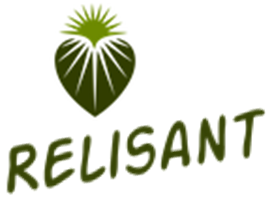

<!--
  Generated template for the SaintaddPage page.

  See http://ionicframework.com/docs/components/#navigation for more info on
  Ionic pages and navigation.
-->
<ion-header>
    <ion-navbar color="primary">
      <button ion-button menuToggle>
        <ion-icon name="menu"></ion-icon>
      </button>
  
      <ion-title>
        <span ion-text>Relisant OmniTrail  </span>
      </ion-title>
      
      <ion-buttons end>
      <!--
          <div class="user-avatar">
              
         </div>  
        -->
        <button ion-button tappable (click)="presentNotifications($event)">
          <ion-icon name="notifications"></ion-icon>
        </button>
        <button ion-button tappable (click)="goToAccount()">
          <ion-icon name="cog"></ion-icon>
        </button>
      </ion-buttons>
    </ion-navbar>
  
    <!--  
    <ion-toolbar padding color="light">
      <p ion-text no-margin class="text-white">
        <strong>4</strong> results found!
      </p>
    </ion-toolbar>
    -->
  
  </ion-header>


<ion-content padding>

</ion-content>
